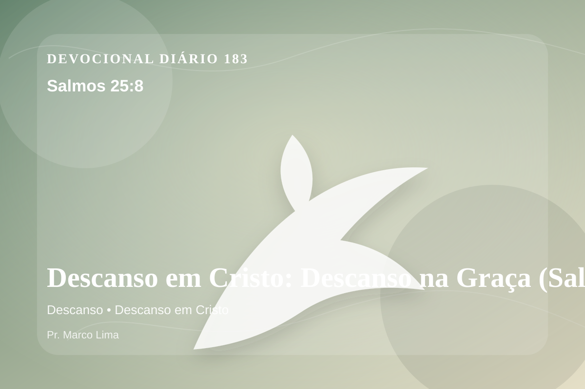

Descanso em Cristo: Descanso na Graça (Salmos 25:8)
O SENHOR é bom e correto; por isso ele ensinará o caminho aos pecadores.
Pensamento
Esta meditação olha para a mesma verdade por outro ângulo, buscando obediência concreta e não apenas informação. Há dias em que precisamos de uma resposta imediata; há outros em que Deus nos dá algo melhor: uma verdade para sustentar a caminhada. Salmos 25:8 faz isso.
Salmos 25:8 chama o coração a ouvir Deus com reverência e responder com fé prática. A Palavra não foi dada para enfeitar pensamentos religiosos, mas para conduzir pessoas reais ao Senhor.
O tema de descanso precisa ser recebido com simplicidade e seriedade. Receba esta Palavra como convite pastoral: Deus está tratando não apenas circunstâncias, mas o coração. O descanso prometido por Deus não é fuga da responsabilidade, mas alívio para a alma que deixa de tentar vencer pela própria força. Em Cristo, o coração encontra descanso porque a graça substitui o peso do merecimento.
O Senhor conhece aquilo que ninguém vê. Por isso, responda com sinceridade: que desejo, atitude ou decisão precisa se render ao governo de Jesus hoje?
Arrependimento não é apenas sentir peso na consciência; é voltar-se para Deus, abandonar o caminho que entristece o Senhor e confiar que a graça de Cristo é suficiente para perdoar e transformar.
Este é o evangelho que sustenta toda aplicação: Jesus Cristo morreu pelos pecadores, ressuscitou em vitória e chama cada pessoa a responder com fé, arrependimento e uma vida rendida ao Seu senhorio.
Em Jesus, o convite de Deus é claro: venha como está, mas não permaneça como está. A graça que perdoa também transforma.
Faça deste dia um altar simples: menos justificativas, mais rendição; menos pressa, mais escuta; menos controle, mais confiança no Senhor.
Para Praticar Hoje
- Leia Salmos 25:8 lentamente e destaque uma palavra ou expressão central do texto.
- Confesse a Deus um pecado, resistência ou frieza espiritual que esta Palavra revelou.
- Declare sua fé em Jesus Cristo e pratique hoje uma atitude concreta de arrependimento e obediência.
Oração
Pai, eu confesso que confundo descanso com fraqueza. Mas o Teu descanso é paz da alma que sabe que Deus governa. Salmos 25:8 me ensina a parar e reconhecer que a vida depende da Tua graça. Ensina-me a responder com simplicidade.
{kind=link}